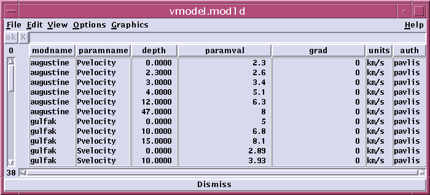
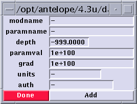

Adding to the default velocity model database
The default velocity model database is stored in the directory $ANTELOPE/data/tables/genloc/db
and has the database name vmodel. If you have write access
to these files this is the simplest way to add a new velocity model to
the system. Run dbe on the vmodel database and bring up the mod1d
table. You should get something like this:

Select the Edit->Add rows function from the top menu of dbe.
This will bring up this form:

A model you add must have a unique model name defined by the modname
attribute. Enter each of the other attributes (For more info these
attribute see document on the velocity
model schema. ) Note that you can enter the values in any depth
order and they will be sorted before use, but it is generally smarter to
enter them in order just to avoid typographical errors.